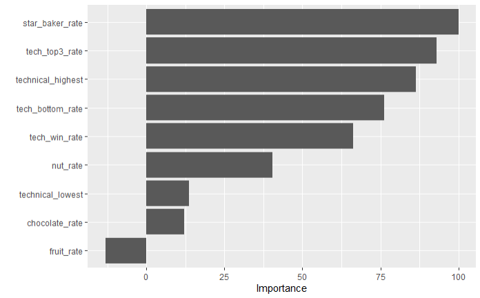

library(remotes)
library(rsample)
library(stringr)
library(ggplot2)
library(GGally)
library(recipes)
library(workflows)
library(dplyr)
library(tidyr)
library(tidyclust)
library(parsnip)
library(broom)
library(tune)
library(yardstick)
library(vip)Final Project
Summary
This analysis serves to show if it is possible to predict if a baker will win The Great British Bake Off (TGBBO) given their performance during their time on the show. For this, we will be looking at how the bakers performed on challenges and also look at what ingredients they used in their dishes to see if that had any impact on judging. From what we can see, while ingredient use has some impact on determining the overall outcome, it is mostly how the bakers perform in challenges that truly determines what their outcome will be.

What we will also see is that while it is possible to predict which bakers will be winners, runner-ups, and won’t win, a random forest model’s ability to predict the outcome is only slightly better than a model that will always predict a baker to lose.Motivation and Context
This project will investigate the bakers from the first ten seasons, or series as the data set labels it, of TGBBO to see if it is possible to predict who will win given their performance. I am investigating this to see if a baker’s performance is solely what determines how well they do on the show, or if ingredient choice plays a part in it. For example, judges could be more critical towards contestants who use chocolate, or they are more lenient towards contestants who use fruits.
In every episode of TGBBO, contestants will have to compete in three challenges: the Signature challenge, the Technical challenge, and the Showstopper challenge. For the Signature and Showstopper challenges, the contestants are allowed to make whatever they’d like as long as it stays within the theme of the challenge. For the Technical challenge, the bakers had to make a specific dish given an outline of what to make. Afterward, the bakers would be evaluated on their performance and each episode will see 1-2 bakers eliminated from the competition. This goes on until the finals where the last three bakers compete against each other to crown one of them as the winner.
Something introduced in the second season of TGBBO was the Star Baker award. This award is given to contestants who had an overall great performance in the Signature, Technical, and Showstopper challenges. Every episode would usually see one baker be given the Star Baker award, but sometimes two or none of the bakers would receive it.
Packages Used In This Analysis
| Package | Use |
|---|---|
| remotes | to access the data sets used for this analysis |
| rsample | to get random sample of the data for training and testing splits, and k cross-fold validation |
| stringr | to use regular expressions for feature engineering |
| ggplot2 | to plot features for exploratory data analysis |
| GGally | to expand upon ggplot2 package to easily make a scatterplot matrix |
| recipes | to make recipes for supervised and unsupervised learning models |
| workflows | to make workflows that help create supervised and unsupervised learning models |
| dplyr | to manipulate the data and summarize it |
| tidyr | to pivot the data so newly engineered features counted as their own column |
| tidyclust | to help finalize models and help create clustering models |
| parsnip | to help create random forest and k-nearest neighbor models |
| broom | to augment datasets with engineered features |
| tune | to find the best parameters for learning models and select them |
| yardstick | to see how well models perform using performance metrics and seeing what is and is not correctly classified |
| vip | to see importance of variables to model |
Data Description
The bakeoff package contains three data sets that will be analyzed: bakers, results_raw, and challenges. In the main data set, bakers, each observation is an individual baker’s performance on a season of TGBBO. Each observation also mentions information like the baker’s age, gender, where they are from, and their job. There are 120 observations and 24 variables. This analysis will also use two other data sets from the same package: results_raw and challenges. Each observation in results_raw tells what happens to each baker in each episode of TGBBO, like whether they had to leave on that episode, if they can stay and continue baking, if they won the Star Baker award for overall excellent performance, or if they are the series winner or runner up on the final episode. In challenges, each observation is also about what a baker did on an episode they were on, but this talks about how they performed in challenges and what they made.
The data was collected by Alison Hill, Chester Ismay, and Richard Iannone. Hill is the main license holder, and, from her website, she Anaconda’s Director of Product. Ismay, according to his website, is a consultant, educator, speaker, and book author for AI and data science related topics. Finally Iannone, according to his GitHub page, is a data scientist who creates tools for data analysis. The information was taken from a Wikipedia article about TGBBO. According to the data scraping scipts, they got the information using a web scraper called rvest to get the information from the tables on the web page.
# importing package
bakeoff <- remotes::install_github("apreshill/bakeoff")
# getting relevant data sets
GBBO_bakers <- bakeoff::bakers
GBBO_results <- bakeoff::results_raw
GBBO_challenges <- bakeoff::challengesData Wrangling
Before doing any data analysis, the data needs to be cleaned up and wrangled. This is because the star_baker and series_runner_up columns in the bakers data set do not match the information contained in the results_raw data set. star_baker is supposed to tell how many times a baker was awarded the Star Baker award for their performance in a challenge while series_runner_up is a binary number of 1 or 0 telling if the baker is a runner-up or not, respectively. However, both of those columns in the bakers data set are entirely made up of 0s even though the result column from results_raw has many instances of bakers getting runner-up and Star Baker.
First thing to do is group the results_raw data set by the baker’s name, season they appeared on, and the result they had for the episode. After summarizing the table and getting a count of how many times a specific result showed up for a specific baker, it is assigned to GBBO_results_summary. Then the data will be pivoted to make new columns of how many times each baker got a certain result. That table is then saved in GBBO_results_pivoted.
# get count of each baker's results
GBBO_results_summary <- GBBO_results |> group_by(baker, series, result) |> summarize(factor_results = n())
# pivot it so each result count is it's own column
GBBO_results_pivoted <- GBBO_results_summary |>
pivot_wider(
names_from = result,
values_from = factor_results
)
head(GBBO_results_pivoted)# A tibble: 6 × 9
# Groups: baker, series [6]
baker series IN OUT `NA` `Runner-up` `STAR BAKER` WINNER SICK
<chr> <fct> <int> <int> <int> <int> <int> <int> <int>
1 Ali 4 3 1 6 NA NA NA NA
2 Alice 10 7 NA NA 1 2 NA NA
3 Alvin 6 5 1 4 NA NA NA NA
4 Amelia 10 2 1 7 NA NA NA NA
5 Andrew 7 7 NA NA 1 2 NA NA
6 Annetha 1 1 1 4 NA NA NA NAAfter that, the next step would be to join the information in GBBO_results_pivoted and GBBO_bakers. After changing the data type of series in GBBO_results_pivoted from factor to integer to match to match GBBO_bakers’s series datatype, the two data sets were merged together on the series and baker columns, keeping all of the information from from GBBO_bakers and adding on the columns that totaled how many times a baker got a certain result from an episode, like if they won the Star Baker award or if they were the season’s runner up.
# right now series in GBBO_results_pivoted is a factor, and to merge it with GBBO_bakers, their types need to match (numeric)
GBBO_results_pivoted$series <- as.integer(GBBO_results_pivoted$series)
# combine with the main bakers df from the bakeoff package
GBBO_bakers_results <- GBBO_bakers |>
left_join(GBBO_results_pivoted,
by = c("series", "baker")) # match by series and baker's nameAfter that column was made, another column was made to tell if the baker won that season, was a runner up, or did not win.
# making the results column
GBBO_bakers_results$results <- "NOT A WINNER" # most of them are not winners, so default everyone not a winner
for(k in 1:120) {
if(!is.na(GBBO_bakers_results$WINNER[k] == 1)) { # Need the !is.na() because I get an error if it tries to do a comparison with a missing value
GBBO_bakers_results$results[k] <- "WINNER"
}
else if(!is.na(GBBO_bakers_results$`Runner-up`[k] == 1)) {
GBBO_bakers_results$results[k] <- "RUNNER-UP"
}
}
head(GBBO_bakers_results)# A tibble: 6 × 32
series baker star_baker technical_winner technical_top3 technical_bottom
<dbl> <chr> <int> <int> <int> <int>
1 1 Annetha 0 0 1 1
2 1 David 0 0 1 3
3 1 Edd 0 2 4 1
4 1 Jasminder 0 0 2 2
5 1 Jonathan 0 1 1 2
6 1 Lea 0 0 0 1
# ℹ 26 more variables: technical_highest <dbl>, technical_lowest <dbl>,
# technical_median <dbl>, series_winner <int>, series_runner_up <int>,
# total_episodes_appeared <dbl>, first_date_appeared <date>,
# last_date_appeared <date>, first_date_us <date>, last_date_us <date>,
# percent_episodes_appeared <dbl>, percent_technical_top3 <dbl>,
# baker_full <chr>, age <dbl>, occupation <chr>, hometown <chr>,
# baker_last <chr>, baker_first <chr>, IN <int>, OUT <int>, `NA` <int>, …Now that the data has been fixed, it is time to engineer some features. Specifically, counts of how many times certain flavors were used on the Showstopper and Signature challenges. While each episode has three challenges, the Technical challenge has every contestant make the exact same dish. So while the contestants are able to show off their skills, they have no freedom in choosing ingredients. In order to get an idea for how many times each contestant used a certain ingredient, every bakers dish from the signature and showstopper columns were split up into a list of words.
# For the portfolio, I wanted to see if using fruits, chocolate, or nuts could impact how likely a person was to win. So I'm string splitting everything in the showstopper and signature columns and counting how many times a word appears
showstopper <- unlist(str_split(GBBO_challenges$showstopper, " "))
signature <- unlist(str_split(GBBO_challenges$signature, " "))
words <- c(showstopper, signature)
most_common_words <- data.frame(words) |> group_by(words) |> count(sort = T)
head(most_common_words, 10)# A tibble: 10 × 2
# Groups: words [10]
words n
<chr> <int>
1 <NA> 881
2 and 654
3 Cake 242
4 Chocolate 176
5 & 110
6 with 109
7 Pie 74
8 Orange 70
9 Lemon 67
10 Raspberry 61The reason why there is a high amount of NA’s is because of how challenges was set up. It records every baker’s dishes for the Signature and Showstopper challenges, but it also does that for bakers who were already eliminated. So since that baker couldn’t make anything, what they made was recorded as NA.
After counting how many times each word appeared and sorting them in descending order, regular expressions were made using the first 200 words. Since there are so many flavor combinations, especially since not all of the challenges involve making desserts, the number of regular expressions will be limited to account for how many times a baker used chocolate, fruits, and nuts during their time on TGBBO.
# Regular expressions using the first 200 most common words
fruit_re <- "Fruit|Orange|Lemon|(b|B)erry|(b|B)erries|(a|A)pple|Cherry|Black Forrest|Lime|Pear|Mango|Banana|Raisin|Fig|Plum|Apricot|Citrus"
chocolate_re <- "Chocolate|Black Forrest|Millionaire"
nut_re <- "(n|N)ut|Almond|Pistachio|Pecan|Amaretto"
# Black Forest cake is a chocolate cake with cherries (Chocolate + Fruit)
# Millionaire cake is a caramel and chocolate dessert
# Amaretto is a liqueur made of almonds, so I'm counting it as a nut flavor
# some nuts and berries aren't listed because they include the word "nut" and "berry" in them, so the (lowercase | uppercase) letter is to catch thoseOnce the regular expressions were made the GBBO_challenges data set was grouped by the baker and series columns, and summarize was used to get a count of how many times a baker decided to use fruit, nuts, or chocolate for their dish.
GBBO_challenge_count <- GBBO_challenges |>
group_by(baker, series) |>
summarize(fruit_used = sum(c(str_detect(signature, fruit_re), str_detect(showstopper, fruit_re)), na.rm = T),
chocolate_used = sum(c(str_detect(signature, chocolate_re), str_detect(showstopper, chocolate_re)), na.rm = T),
nut_used = sum(c(str_detect(signature, nut_re),str_detect(showstopper, nut_re)), na.rm = T)
)
head(GBBO_challenge_count)# A tibble: 6 × 5
# Groups: baker [6]
baker series fruit_used chocolate_used nut_used
<chr> <int> <int> <int> <int>
1 Ali 4 5 1 3
2 Alice 10 8 4 4
3 Alvin 6 6 0 1
4 Amelia 10 1 0 1
5 Andrew 7 2 1 0
6 Annetha 1 2 1 0Now that the counts are saved in GBBO_challenge_count, every single column that holds a count will be turned into a rate. Since every episode eliminates a baker, the bakers with lower counts of nuts, fruits, and chocolate used, along with the times they won or were in the top and bottom 3 of technical challenges are implied to have been eliminated earlier.
# combine
GBBO_bakers_results_challenge <- GBBO_bakers_results |>
left_join(GBBO_challenge_count,
by = c("series", "baker"))
## ingredients used
# fruit
GBBO_bakers_results_challenge$fruit_rate <- GBBO_bakers_results_challenge$fruit_used / GBBO_bakers_results_challenge$total_episodes_appeared
# chocolate
GBBO_bakers_results_challenge$chocolate_rate <- GBBO_bakers_results_challenge$chocolate_used / GBBO_bakers_results_challenge$total_episodes_appeared
# nut
GBBO_bakers_results_challenge$nut_rate <- GBBO_bakers_results_challenge$nut_used / GBBO_bakers_results_challenge$total_episodes_appeared
## technical win/loss
# win
GBBO_bakers_results_challenge$tech_win_rate <- GBBO_bakers_results_challenge$technical_winner / GBBO_bakers_results_challenge$total_episodes_appeared
# top 3
GBBO_bakers_results_challenge$tech_top3_rate <- GBBO_bakers_results_challenge$technical_top3 / GBBO_bakers_results_challenge$total_episodes_appeared
# loss
GBBO_bakers_results_challenge$tech_bottom_rate <- GBBO_bakers_results_challenge$technical_bottom / GBBO_bakers_results_challenge$total_episodes_appeared
# star baker
GBBO_bakers_results_challenge$star_baker_rate <- GBBO_bakers_results_challenge$`STAR BAKER` / GBBO_bakers_results_challenge$total_episodes_appeared
head(GBBO_bakers_results_challenge)# A tibble: 6 × 42
series baker star_baker technical_winner technical_top3 technical_bottom
<dbl> <chr> <int> <int> <int> <int>
1 1 Annetha 0 0 1 1
2 1 David 0 0 1 3
3 1 Edd 0 2 4 1
4 1 Jasminder 0 0 2 2
5 1 Jonathan 0 1 1 2
6 1 Lea 0 0 0 1
# ℹ 36 more variables: technical_highest <dbl>, technical_lowest <dbl>,
# technical_median <dbl>, series_winner <int>, series_runner_up <int>,
# total_episodes_appeared <dbl>, first_date_appeared <date>,
# last_date_appeared <date>, first_date_us <date>, last_date_us <date>,
# percent_episodes_appeared <dbl>, percent_technical_top3 <dbl>,
# baker_full <chr>, age <dbl>, occupation <chr>, hometown <chr>,
# baker_last <chr>, baker_first <chr>, IN <int>, OUT <int>, `NA` <int>, …The ingredient use rate will be on a scale of 0 to 2 as the bakers could use fruits in either the Showstopper or Signature challenge. The technical results and how often a baker got the Star Baker award will be on a scale from 0 to 1 as every episode the bakers only have one chance for the technical challenges and to get the award.
Now the data set will be finalized. To do that, the columns that will be used for analysis are selected and saved into GBBO_bakers_results_challenge. After that, any NA’s left columns of rates will be replaced by 0, and any other missing values will be filled in.
# select all columns I'm going to use along with series and baker_full so I have an identifier
GBBO_bakers_results_challenge <- GBBO_bakers_results_challenge |> select(series, baker_full, star_baker_rate, tech_win_rate, tech_top3_rate, tech_bottom_rate, technical_highest, technical_lowest, fruit_rate, chocolate_rate, nut_rate, results)
# replace the na with 0 in star_baker_rate
for (k in 1:120) {
if (is.na(GBBO_bakers_results_challenge$star_baker_rate[k])) {
GBBO_bakers_results_challenge$star_baker_rate[k] <- 0
}
}
GBBO_bakers_results_challenge$results <- as.factor(GBBO_bakers_results_challenge$results)
# manually adding an approximate technical score for Mark Whithers
GBBO_bakers_results_challenge[8,]$"technical_highest" <- 7
GBBO_bakers_results_challenge[8,]$"technical_lowest" <- 7
head(GBBO_bakers_results_challenge, 10)# A tibble: 10 × 12
series baker_full star_baker_rate tech_win_rate tech_top3_rate
<dbl> <chr> <dbl> <dbl> <dbl>
1 1 "Annetha Mills" 0 0 0.5
2 1 "David Chambers" 0 0 0.25
3 1 "Edward \"Edd\" Kimber" 0 0.333 0.667
4 1 "Jasminder Randhawa" 0 0 0.4
5 1 "Jonathan Shepherd" 0 0.333 0.333
6 1 "Lea Harris" 0 0 0
7 1 "Louise Brimelow" 0 0 0
8 1 "Mark Whithers" 0 0 0
9 1 "Miranda Gore Browne" 0 0.333 0.667
10 1 "Ruth Clemens" 0 0 0.333
# ℹ 7 more variables: tech_bottom_rate <dbl>, technical_highest <dbl>,
# technical_lowest <dbl>, fruit_rate <dbl>, chocolate_rate <dbl>,
# nut_rate <dbl>, results <fct>At the very end, there was one baker who was missing information: Mark Whithers, who was in the 8th row of GBBO_bakers_results_challenge. For the first ever episode of TGBBO, he never had a recorded value for the technical highest and lowest, and he was eliminated on the first episode. The reason why he has no recorded score was because TGBBO’s first episode only has the top three and the bottom three listed for the technical challenge. While I could’ve given him an average of fifth place for the technical highest and lowest, the three other contestants who did not get scores recorded for that episode, Edward “Edd” Kimber, Jasminder Randhawa, and Ruth Clemens, have scored in the top three for technical challenges a few times. And given the first season of TGBBO was only 6 episodes long, the fact that they were in the technical top three at least twice means they were the top three bakers for at least a third of the show. Since Mark was eliminated on the first episode, he clearly was not as skilled of a baker as the other three, which is why I have set his values for the technical highest and lowest to both be 7, the lowest possible value of the middle four rankings.
Finally, the training and testing sets will be made so Exploratory Data Analysis can be done, and models can be made.
set.seed(100)
GBBO_split <- initial_split(GBBO_bakers_results_challenge, 0.75) # 75-25 split
GBBO_train <- training(GBBO_split)
GBBO_test <- testing(GBBO_split)Exploratory Data Analysis
Univariate
The first thing I wanted to do was get a good idea of how my results for the training data set are distributed. Since this data set is based off the first 10 seasons of TGBBO, I am expecting a majority of the observations to be non-winners, with some runner ups and winners.
# summary
summary(GBBO_train$results)NOT A WINNER RUNNER-UP WINNER
66 16 8 # graph
ggplot(
data = GBBO_train,
mapping = aes(x = results)
) +
geom_bar(
) +
labs(
x = "Baker's End Result",
y = "Number of Bakers",
title = "Number of Winners, Runner-Ups, and Non-Winners in The Great British Bake Off"
) +
scale_y_continuous(breaks = seq(0,100, 20))
I got approximately the distribution I was expecting. However, something interesting to note is that this original data set is based off the first 10 seasons of TGBBO. Given each season has one winner and two runner-ups, I ended up getting an exact 2:1 ratio of runner ups to winners. I am concerned about the possibility of my models getting overtrained on non winners. This does make me wonder if the models will actually be able to predict if a contestant will not win, be a runner up, or a winner accurately, or of it an only accurately tell if they will be in the top 3.
The next variable I will look at is star_baker_rate, which is how often a contestant won the Star Baker award during their time on TGBBO. I wanted to see if the data was distributed normally and would look like a bell curve, or if it was skewed in any way. I also wanted to get the mean to see, on average, how often the bakers in the training set would get the Star Baker award.
# summary
star_baker_summary <- fivenum(GBBO_train$star_baker_rate)
GBBO_train |>
summarize(
n = n(),
min = star_baker_summary[1],
Q1 = star_baker_summary[2],
median = star_baker_summary[3],
Q3 = star_baker_summary[4],
max = star_baker_summary[5],
mean = mean(star_baker_rate),
"won_0-0.10" = sum(star_baker_rate <= 0.10),
"won_0.10-0.20" = sum(star_baker_rate > 0.10 & star_baker_rate <= 0.20),
"won_0.20-0.30" = sum(star_baker_rate > 0.20 & star_baker_rate <= 0.30),
"won_0.30-0.40" = sum(star_baker_rate > 0.30 & star_baker_rate <= 0.40),
"won_0.40-0.50" = sum(star_baker_rate > 0.40 & star_baker_rate <= 0.50),
"won_0.50-0.60" = sum(star_baker_rate > 0.50 & star_baker_rate <= 0.60),
"won_0.60-0.70" = sum(star_baker_rate > 0.60 & star_baker_rate <= 0.70),
"won_0.70-0.80" = sum(star_baker_rate > 0.70 & star_baker_rate <= 0.80),
"won_0.80-0.90" = sum(star_baker_rate > 0.80 & star_baker_rate <= 0.90),
"won_0.80-0.90" = sum(star_baker_rate > 0.80 & star_baker_rate <= 0.90),
"won_0.90-1.00" = sum(star_baker_rate > 0.90 & star_baker_rate <= 1.00)
)# A tibble: 1 × 17
n min Q1 median Q3 max mean `won_0-0.10` `won_0.10-0.20`
<int> <dbl> <dbl> <dbl> <dbl> <dbl> <dbl> <int> <int>
1 90 0 0 0 0.167 0.5 0.0918 54 24
# ℹ 8 more variables: `won_0.20-0.30` <int>, `won_0.30-0.40` <int>,
# `won_0.40-0.50` <int>, `won_0.50-0.60` <int>, `won_0.60-0.70` <int>,
# `won_0.70-0.80` <int>, `won_0.80-0.90` <int>, `won_0.90-1.00` <int># histogram
ggplot(
data = GBBO_train,
mapping = aes(x = star_baker_rate)
) + geom_histogram(
binwidth = 0.1
) + labs(
x = "How Often a Baker Wins Star Baker",
y = "Number of Bakers",
title = "How Often Do Bakers Win Star Baker"
) +
geom_vline(aes(xintercept = mean(star_baker_rate))) +
scale_x_continuous(breaks = seq(0, 1, .1)) +
scale_y_continuous(breaks = seq(0,75, 5))
The results show that not a lot of people in my training data set were able to get the Star Baker award. In fact, it almost looks similar to the distribution of losers, winners, and runner-ups in the bar graph above. There are some outliers where a couple of bakers got the Star Baker award 50% of the time. I don’t plan on removing that outlier as those could be the seed I chose randomly put all the people who won 4 times in my test set. It could also be that those were people who were on for two for four episodes and got Star Baker for one or two episodes respectively, or their competition was nowhere near as good as they were.
Something that I am wondering though is how significant this variable will be compared to other factors like how often someone was in the technical top 3? Because while being the highest performing baker for an episode is great, how would that compare to someone who is consistently in the top 3 for technical challenges, which test a bakers skill? I am also curious to see if being named Star Baker has anything to do with what kind of flavors were used in the dish. Maybe some of the judges are more biased towards certain flavors, or the bakers are more comfortable working with certain ingredients over others.
The last single variable I was interested in analyzing was how often a baker chose to use fruits for their signature and showstopper challenges. I also looked at the mean to get an average of how often a baker would use fruit. I wanted to explore this because there are a lot of desserts that use fruit like tarts, pies, cakes, and jam. So I wanted to see, again, if the data would be skewed or normally distributed.
# summary
fruit_used_summary <- fivenum(GBBO_train$fruit_rate)
GBBO_train |>
summarize(
n = n(),
min = fruit_used_summary[1],
Q1 = fruit_used_summary[2],
median = fruit_used_summary[3],
Q3 = fruit_used_summary[4],
max = fruit_used_summary[5],
mean = mean(fruit_rate),
"used_0-0.20" = sum(fruit_rate <= 0.20),
"used_0.20-0.40" = sum(fruit_rate > 0.20 & fruit_rate <= 0.40),
"used_0.40-0.60" = sum(fruit_rate > 0.40 & fruit_rate <= 0.60),
"used_0.60-0.80" = sum(fruit_rate > 0.60 & fruit_rate <= 0.80),
"used_0.80-1.00" = sum(fruit_rate > 0.80 & fruit_rate <= 1.00),
"used_1.00-1.20" = sum(fruit_rate > 1.00 & fruit_rate <= 1.20),
"used_1.20-1.40" = sum(fruit_rate > 1.20 & fruit_rate <= 1.40),
"used_1.40-1.60" = sum(fruit_rate > 1.40 & fruit_rate <= 1.60),
"used_1.60-1.80" = sum(fruit_rate > 1.60 & fruit_rate <= 1.80),
"used_1.80-2.00" = sum(fruit_rate > 1.80 & fruit_rate <= 2.00)
)# A tibble: 1 × 17
n min Q1 median Q3 max mean `used_0-0.20` `used_0.20-0.40`
<int> <dbl> <dbl> <dbl> <dbl> <dbl> <dbl> <int> <int>
1 90 0 0.429 0.667 0.9 1.5 0.672 8 13
# ℹ 8 more variables: `used_0.40-0.60` <int>, `used_0.60-0.80` <int>,
# `used_0.80-1.00` <int>, `used_1.00-1.20` <int>, `used_1.20-1.40` <int>,
# `used_1.40-1.60` <int>, `used_1.60-1.80` <int>, `used_1.80-2.00` <int># graph
ggplot(
data = GBBO_train,
mapping = aes(x = fruit_rate)
) +
geom_histogram(
binwidth = 0.2,
center = 1
) +
labs(
x = "Times Bakers Used Fruit on an Episode",
y = "Number of Bakers",
title = "How Often Bakers Used Fruits in Challenges"
) +
geom_vline(aes(xintercept = mean(fruit_rate))) +
scale_x_continuous(breaks = seq(0,2, 0.2))
According to the graph, the data isn’t exactly skewed. It’s more like the graph has two peaks. Something interesting to note is that there are a lot of bakers who used no fruit, or they used fruit 0.2 times per episode. To put that into perspective, if a baker was on 5 episodes of TGBBO, they only used fruit once. It is actually quite rare to see bakers using fruit more than one time per episode. Also, looking at the mean of the data, on average bakers are not guaranteed to use fruit in a challenge.
BiVariate/ Multivariate
Since I want to get a general idea of all trends of data interaction to see if anything looked collinear, or if it looked like anything had any kind of interaction, I am going to make a scatterplot matrix of all the predictor variables I plan on using.
ggpairs(
GBBO_train,
columns = c("tech_win_rate", "tech_top3_rate", "tech_bottom_rate", "technical_highest", "technical_lowest", "star_baker_rate", "fruit_rate", "chocolate_rate", "nut_rate"),
lower = list(continuous = "points"),
upper = list(continuous = "points")
)
It appears that how often a baker is in the technical top 3 does have a positive relationship with how often a baker wins a technical challenge, which makes sense as people who make it into the top three consistently are likely to win at least one of the technical challenges. We also see that ingredient usage has no correlation with how often someone is in the top or bottom three for technical challenges, which makes sense as the technical challenges are based on baker skill and not on what kind of flavor combinations they can make. Something interesting to note is that star_baker_rate seems to make a funnel shape with fruit_rate, while it seems to be negatively correlated with chocolate_rate and have no correlation with nut_rate. Another interesting thing to note is that the ingredient uses all have a positive linear relationship with each other. I am now wondering if that is just because those bakers were on for a long time so it make sense they would’ve used a lot of ingredients, or if those bakers were on for a shorter amount of time, but they combined a lot of flavors.
Since there are a lot of bakers using chocolate and fruits, it is now time to see if that has any impact on how likely they are to win.
ggplot(
data = GBBO_train,
mapping = aes(
x = fruit_rate,
y = chocolate_rate,
color = results
)
) +
geom_point(alpha = 0.50) +
geom_smooth(method = "lm", se = FALSE) +
labs(
x = "Average Fruit Use Per Episode",
y = "Average Chocolate Use Per Episode",
title ="How Using Chocolate and Fruits Affects Win Rate"
) `geom_smooth()` using formula = 'y ~ x'
Surprisingly, it seems as though if bakers used chocolate too many times, they were guaranteed to lose. Because the data has so many non-winners and runner-ups compared to winners, the lines of best fit for non-winners and runner-ups have more points to calculate off of. Since there are not a lot of winners, it is difficult to get an idea of what is the ideal chocolate and fruit usage. At the very least, looking at the graph we can see that all the winners used more fruit than chocolate, and that they didn’t use them every episode.
I am curious to see what was going on with the four bakers who used chocolate around once an episode. Since we know they didn’t overly rely on fruits, I want to see their performance and if they used nuts.
GBBO_train[which(GBBO_train$chocolate_rate >= 1.0),]# A tibble: 4 × 12
series baker_full star_baker_rate tech_win_rate tech_top3_rate
<dbl> <chr> <dbl> <dbl> <dbl>
1 1 Louise Brimelow 0 0 0
2 2 Simon Blackwell 0 0 0
3 4 Toby Waterworth 0 0 0
4 9 Imelda McCarron 0 0 0
# ℹ 7 more variables: tech_bottom_rate <dbl>, technical_highest <dbl>,
# technical_lowest <dbl>, fruit_rate <dbl>, chocolate_rate <dbl>,
# nut_rate <dbl>, results <fct>So it turns out none of them used nuts, which is surprising. It appears though these bakers tended to use flavors that weren’t from fruits, chocolates, or nuts. Also, interestingly, none of these bakers were in the ever in the top three for technical challenges, or won the Star Baker Award. This would make sense as these are less skilled bakers, so they naturally wouldn’t perform as well as those who went on to be runner-ups and winners.
The final multivariate trend we will observe is seeing how often one uses nuts and wins the Star Baker award affect their chances of winning. Given that Star Baker awards are based on overall performance, I would assume that the more times a baker has won Star Baker, the overall better baker they are. However, I am also curious to see how nuts affect the win rate.
ggplot(
data = GBBO_train,
mapping = aes(
x = nut_rate,
y = star_baker_rate,
color = results
)
) +
geom_point(alpha = 0.50) +
geom_smooth(method = "lm", se = FALSE) +
labs(
x = "Average Nut Use Per Episode",
y = "Average Time Bakers Won Star Baker",
title ="How Using Nuts and Being the Star Baker Affect Win Rate"
)`geom_smooth()` using formula = 'y ~ x'
The graph wasn’t really what I was expecting. It seems like the more often bakers used nuts, the less likely they were to win. However, there is a specific range where the bakers used nuts and they managed to get the Star Baker award that they were the winners. Something interesting to note is that most of the bakers who were runner-ups and winners won the Star Baker award at most 30% of the time, while using nuts about 0.2 to 0.5 times an episode. There are also some runner-up outliers to take a look at.
GBBO_train[which(GBBO_train$star_baker_rate >= 0.4 & GBBO_train$results == 'RUNNER-UP'),]# A tibble: 1 × 12
series baker_full star_baker_rate tech_win_rate tech_top3_rate
<dbl> <chr> <dbl> <dbl> <dbl>
1 5 Richard Burr 0.5 0.2 0.4
# ℹ 7 more variables: tech_bottom_rate <dbl>, technical_highest <dbl>,
# technical_lowest <dbl>, fruit_rate <dbl>, chocolate_rate <dbl>,
# nut_rate <dbl>, results <fct>GBBO_train[which(GBBO_train$star_baker_rate == 0 & GBBO_train$results == 'RUNNER-UP'),]# A tibble: 2 × 12
series baker_full star_baker_rate tech_win_rate tech_top3_rate
<dbl> <chr> <dbl> <dbl> <dbl>
1 2 Mary-Anne Boermans 0 0 0.5
2 1 Miranda Gore Browne 0 0.333 0.667
# ℹ 7 more variables: tech_bottom_rate <dbl>, technical_highest <dbl>,
# technical_lowest <dbl>, fruit_rate <dbl>, chocolate_rate <dbl>,
# nut_rate <dbl>, results <fct>The baker who had a star_baker_rate of 0.5, Richard Burr, has varied performance, but most of the time he was in the bottom three for technical challenges. The two bakers who had a star_baker_rate of 0, Mary-Anne Boermans and Miranda Gore Browne, were in the technical top 3 for at least half of their time on TGBBO. So given these pieces of information, it looks like getting the Star Baker award seems to more impact how likely a person is to be a runner-up than to be a winner.
Modeling
The model that will be tuned and fitted is a random forest model. How the random forest model works is it makes a lot of decision trees with small depths, or few splits for decisions. While on their own these trees would be terrible models, when they all work together they achieve good results. How random forest makes these trees is it randomly samples m points from the training set and uses those points to decide what to split the decision tree on. After making the short trees, or stumps if the depth is 1 because there is only one split, it can be used to classify a test set. The first step will be to make a random forest model and a recipe, which will then be added to a workflow.
# model
GBBO_rf_model <- rand_forest(
mode = "classification",
engine = "ranger"
) |>
set_args(seed = 100,
importance = "permutation",
mtry = tune()
)
# recipe
GBBO_rf_recipe <- recipe(results ~ .,
data = GBBO_train) |>
step_rm(series, baker_full) |>
step_normalize(all_numeric_predictors())For the random forest model, I am going to tune mtry, which controls how many predictors are sampled at each split. Suppose mtry was 5, that means the model will take a five random variables from the training set and use those to determine what the tree should split on. If the mtry is low, then bias is low and variance is high because the decision to split was made on a few points, and if even one of those changed, that could rework how some of the trees are structured. Conversely, an mtry that’s too high will will have high variance and low bias because it will likely be overfitted.
GBBO_rf_wflow <- workflow() |>
add_model(GBBO_rf_model) |>
add_recipe(GBBO_rf_recipe)After making the workflow, I will make a k-fold cross validation set and a grid to tune the model. The k-fold cross validation set divides the training set into k “folds” or parts of approximately equal size. It will then train a model on all but one of the folds. That last fold will act as a test set where the model predicts on it. The grid will be for mtry and will hold the sequence of mtry’s the model will tune.
set.seed(100)
GBBO_kfold <- vfold_cv(
data = GBBO_train,
v = 5, repeats = 2 # divide the training set into 5 folds twice and tune on both cvs
)
GBBO_rf_grid <- expand.grid(mtry = seq(1, 9))
GBBO_rf_tune <- tune_grid(GBBO_rf_model,
GBBO_rf_recipe,
resamples = GBBO_kfold,
metrics = metric_set(roc_auc, brier_class, mn_log_loss, accuracy),
grid = GBBO_rf_grid)
autoplot(GBBO_rf_tune)
According to the performance metrics, it appears as though the more features are used in a single tree, the worse our model performs. So our random forest will be made up of stumps, or trees that have a single split because they only predict on one variable.
GBBO_rf_best <- select_best(
GBBO_rf_tune,
metric = "brier_class"
)
GBBO_rf_wflow_final <- finalize_workflow(GBBO_rf_wflow, parameters = GBBO_rf_best)
GBBO_rf_fit <- fit(GBBO_rf_wflow_final, data = GBBO_train)
GBBO_rf_predictions <- GBBO_rf_fit |>
augment(new_data = GBBO_test)conf_mat(
GBBO_rf_predictions,
truth = results,
estimate = .pred_class
) Truth
Prediction NOT A WINNER RUNNER-UP WINNER
NOT A WINNER 24 2 2
RUNNER-UP 0 2 0
WINNER 0 0 0vip(GBBO_rf_fit |> extract_fit_engine(), scale = T)
GBBO_rf_metric_avg <- GBBO_rf_tune$.metrics |>
bind_rows(
.id = "validation_set"
) |>
filter(.metric == "accuracy") |>
group_by(mtry) |>
summarize(
mean = mean(.estimate),
sd = sd(.estimate)
)
GBBO_rf_metric_avg# A tibble: 9 × 3
mtry mean sd
<int> <dbl> <dbl>
1 1 0.778 0.128
2 2 0.772 0.115
3 3 0.761 0.105
4 4 0.756 0.109
5 5 0.739 0.120
6 6 0.739 0.120
7 7 0.739 0.120
8 8 0.739 0.120
9 9 0.739 0.120Looking at the accuracy of these models, it looks like only using one predictor to split the tree on yielded the best results and it had high accuracy, and an average standard deviation. While an mtry of 5 and higher may have had the lowest standard deviations, the average accuracy on the mtry of 1 model makes up for the inconsistency by being much higher than that of the mtry of 5.
Insights
Looking at our Exploratory Data Analysis, we can see that how often bakers used nuts, fruits, and chocolate in their cooking did not have much of an impact on how likely they were to win TGBBO or be a runner-up. As we look at the variable importance plot from the modeling section, we can see that the features with the highest importance are star_baker_rate, tech_top3_rate, and technical_highest. This makes sense as the technical challenges are about skill, and Star Baker awards are for overall performance. So taking these rates into account would tell how skilled a baker was, which is important in determining how likely they are to win TGBBO.
Looking at the confusion matrix from the modeling section, the model is really good at predicting who will not win, but isn’t the best at predicting runner-ups, and cannot predict who will win. The random forest model was able to correctly classify 26 observations out of 30, giving it an accuracy of about 87%. However, assume we have a model that predicts every baker will lose no matter what. That will correctly predict 24 out of the 30 observations, giving us an accuracy of 80%. So while this random forest model was able to correctly predict half of the runner ups, it does not do much better than a model that classifies everything as one class. This is likely due to how many non-winners were in the training set compared to runner-ups and winners.
Limitations and Future Work
The random forest model was really good at predicting who wouldn’t win, but was not the best at predicting who would be a runner up or who would win the season. As mentioned in the Insights section, the random forest model is only slightly more accurate than a model that will default to everyone losing regardless of performance. This is likely due to the fact that I have a lot of non-winners in my training set compared to runner-ups and winners. The data was like that because these are the results of a television show where contestants are eliminated on every episode. There are going to be a lot of people who don’t win compared to the people who do win. For future work, I could investigate who would be most likely to win if they made it to half of the season’s run time. That would definitely cut down on the amount of non-winners.
When making the models, I did not filter out the bakers from season 1. I kept them in as the data set was only 120 observations with them in, and I was concerned that the data set would be too small. The reason why I should have filtered out the bakers from season 1 was because the Star Baker award hadn’t been invented yet. Also seeing the variable importance plot from the models shows that the most important variable in determining who was and was not likely to be at least a runner up was how often a baker got the Star Baker award. Given that the importance could have been skewed by none of the bakers from season 1 getting the award, in the future I could look at filtering out season 1 to get a more accurate prediction.
One final thing of note is that this data was collected by using a web scraper on Wikipedia articles. While for the most part the data was obtained accurately from the website, the data itself may not be entirely accurate. How Wikipedia works is that anyone can edit an article. So it is unknown if the information is entirely accurate. Also, looking at the Wikipedia page for season 1, Edd and Jasminder are missing what they made for the Showstopper challenge on the first episode. So not only is the accuracy of the information in question, some of my analysis could be incorrect because of this data. Perhaps in the future, I could spend some time watching TGBBO and record the results myself. That way I can double check the information in the data sets and add in any missing information manually.